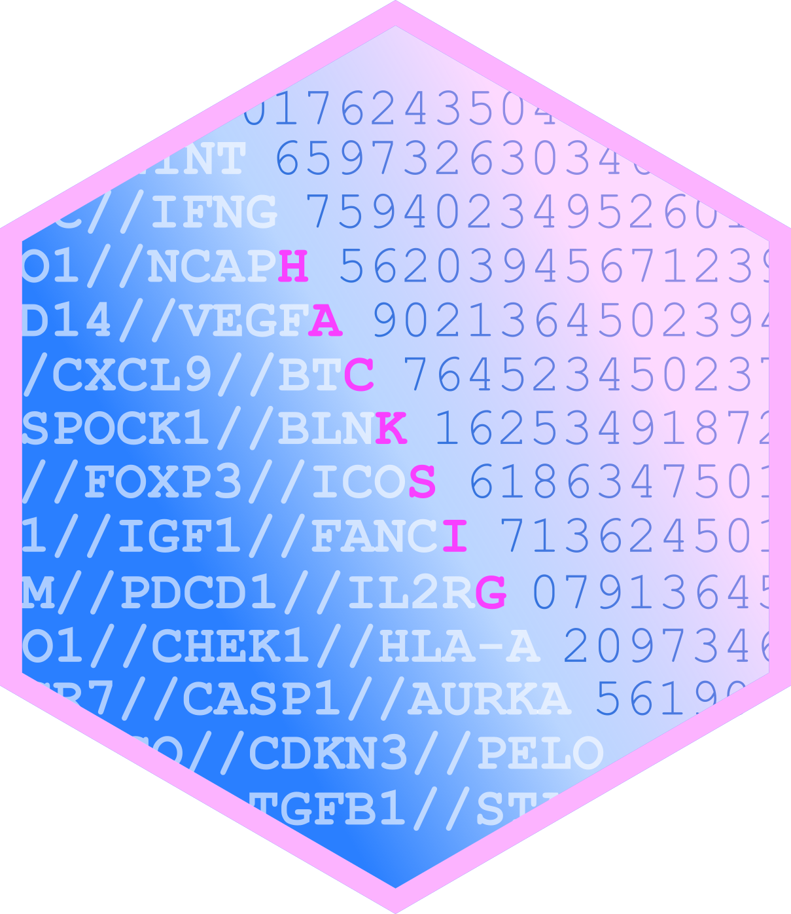

Package index
-
hack_sig() - Score samples by gene signatures
-
hack_estimate() - Hack the ESTIMATE scores
-
hack_cinsarc() - Hack the CINSARC classification
-
hack_immunophenoscore() - Hack the Immunophenoscore
-
stratify_sig() - Stratify samples into classes
-
check_sig() - Check signatures feasibility
-
get_sig_info() - Display available gene signatures
-
get_sig_genes() - Get signature gene identifiers
-
test_expr - A toy gene expression matrix